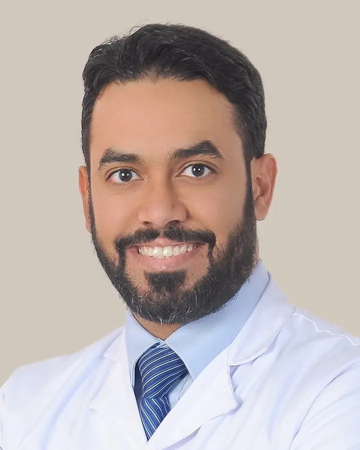

استشاري جراحة · الرياض
جراحةبدقّة الروبوت.
خبرة تتجاوز خمسة عشر عامًا في جراحة السمنة والجراحة الأيضية والجراحة العامة، وأجرى في السنوات الأخيرة عملياته كلها تقريبًا بالروبوت.
يرد على الاتصالات فيصل، المساعد الذكي للدكتور علاء الحازمي، ويمكنه تسجيل رسالتك.

15+
عامًا من الخبرة الجراحية
2
بورد أمريكي: الجراحة وطب السمنة
FACS
زميل الكلية الأمريكية للجرّاحين
«من حق كل مريض أن يفهم خياراته كلها، الجراحية وغير الجراحية، قبل اتخاذ أي قرار.»
مهارة الجرّاح،وثبات الروبوت.
في الجراحة الروبوتية، يتحكّم الجرّاح من وحدة تحكّم بأدوات دقيقة تنثني وتدور، وبكاميرا تعرض صورة مكبّرة ثلاثية الأبعاد، ويعمل من خلال فتحات صغيرة.
رؤية مكبّرة ثلاثية الأبعاد
صورة عالية الوضوح لموضع العملية بأبعادها الثلاثة.
أدوات مرنة الحركة
أدوات تنثني وتدور لتتيح حركة دقيقة ومحكمة.
فتحات صغيرة
جراحة عبر فتحات صغيرة بدل شقّ جراحي كبير.
عمليات راسخة
تكميم المعدة وتحويل المسار والفتق والمرارة، تُجرى بالروبوت.
ليس كل مريضبحاجة إلى جراحة.
د. علاء الحازمي حاصل على البورد الأمريكي في الجراحة وفي طب السمنة، لذا قد تشمل خطتك عملية جراحية أو علاجًا طبيًا أو كليهما. ويُحدَّد المسار الأنسب لك بعد تقييم شامل.
دون جراحة
- تقييم طبي وفحوصات
- خطة للتغذية والنشاط البدني
- أدوية علاج السمنة عند الحاجة
- متابعة منتظمة
بالجراحة
- تكميم المعدة أو تحويل المسار بالروبوت
- الجراحة الأيضية لعلاج السكري من النوع الثاني
- تصحيح عملية سابقة
- متابعة طويلة الأمد
هل أنا مرشّح للعلاج؟
أدخل طولك ووزنك لتعرف موقعك وفق الإرشادات الدولية.
مؤشر كتلة الجسم لديك
ستظهر النتيجة هنا.
للتثقيف فقط، وليست تشخيصًا؛ فالعلاج المناسب يُحدَّد بعد تقييم شامل. تستند النتيجة إلى إرشادات ASMBS/IFSO لعام 2022، وتنطبق حدود أقل على ذوي الأصول الآسيوية.
العلاجات
رعاية جراحية وطبية للسمنة وأمراض البطن الشائعة.
لكل عملية جراحية مخاطر محتملة، منها النزيف والالتهاب والتسرّب ونقص بعض العناصر الغذائية، وتُناقَش جميعها بالتفصيل قبل اتخاذ أي قرار. والمتابعة طويلة الأمد ضرورية، فالتخلّف عن مواعيد المتابعة يزيد خطر المضاعفات. وتختلف مدة التعافي من شخص لآخر.
من رسالتك الأولى إلى المتابعة طويلة الأمد.
أرسل رسالة
تواصل معنا عبر واتساب أو الهاتف بسؤالك.
تقييم شامل
استشارة، والفحوصات اللازمة، وتقييم من فريق التغذية.
العلاج
خطة علاج طبية، أو تهيئة ثم جراحة روبوتية وإقامة قصيرة في المستشفى.
متابعة مستمرة
دعم متواصل في التغذية والفيتامينات والنشاط البدني والأدوية.
د. علاء الحازمي
MD, FACS, ABS, ABOM, MBA
حصل د. علاء الحازمي على شهادة الطب من جامعة جورج واشنطن، وأتمّ زمالة جراحة المناظير وجراحة السمنة في جامعة كاليفورنيا ديفيس. وهو حاصل على البورد الأمريكي للجراحة والبورد الأمريكي لطب السمنة، وعمل استشاريًا لأكثر من خمسة عشر عامًا في مستشفى الملك فيصل التخصصي ومركز الأبحاث بالرياض.
- التعليم
- دكتوراه في الطب، جامعة جورج واشنطن
- الزمالة
- جراحة المناظير وجراحة السمنة، جامعة كاليفورنيا ديفيس
- الشهادات
- البورد الأمريكي للجراحة · البورد الأمريكي لطب السمنة · زميل الكلية الأمريكية للجرّاحين
أسئلةشائعة
ما الفرق بين الجراحة الروبوتية وجراحة المنظار؟
كلتاهما تُجرى عبر فتحات صغيرة. وفي الجراحة الروبوتية يحرّك الجرّاح الأدوات من وحدة تحكّم، مع رؤية مكبّرة ثلاثية الأبعاد وأدوات مرنة الحركة. ويُحدَّد الأنسب لحالتك خلال الاستشارة.
هل أنا مرشّح لعملية إنقاص الوزن؟
توصي الإرشادات الدولية لعام 2022 (ASMBS/IFSO) بالجراحة للبالغين إذا بلغ مؤشر كتلة الجسم 35 أو أكثر، وبالنظر فيها ابتداءً من 30 عند وجود مرض أيضي. ولا يُتّخذ القرار إلا بعد تقييم شامل.
ما مخاطر عمليات السمنة؟
كأي عملية كبرى، تشمل المخاطر النزيف والالتهاب وتسرّبًا من موضع توصيل المعدة أو الأمعاء وتجلّط الدم. وقد تظهر لاحقًا مشكلات مثل نقص الفيتامينات والمعادن وحصوات المرارة وتضيّق موضع التوصيل والفتق. وفي دراسة كبيرة شملت 209,116 مريضًا تستشهد بها الجمعية الأمريكية لجراحة السمنة والأيض، بلغت نسبة الوفاة 0.16%، أي نحو حالة واحدة من كل 600. ويشير المعهد الوطني الأمريكي للسكري وأمراض الجهاز الهضمي والكلى إلى أن نحو ثلث المرضى يحتاجون إلى إجراء إضافي أو تنويم خلال 5 سنوات. وتعتمد المخاطر في حالتك على صحتك ونوع العملية، وتُناقَش معك قبل اتخاذ أي قرار.
المصدر: الجمعية الأمريكية لجراحة السمنة والأيض، أسئلة شائعة عن جراحة السمنة (بالإنجليزية)
كم سأفقد من وزني؟
يعتمد ذلك على نوع العملية وعلى حالتك. وتذكر الجمعية الأمريكية لجراحة السمنة والأيض أن أكثر من 95% من المرضى يفقدون نصف وزنهم الزائد أو أكثر، وأن مرضى تحويل المسار يفقدون في المتوسط نحو 70% من وزنهم الزائد، ثم يستعيدون نحو 5% منه بعد سنتين أو أكثر. وتختلف النتائج من شخص لآخر ولا يمكن ضمانها.
المصدر: الجمعية الأمريكية لجراحة السمنة والأيض، أسئلة شائعة عن جراحة السمنة (بالإنجليزية)
هل تغني أدوية إنقاص الوزن عن العملية؟
تساعد أدوية مثل سيماغلوتايد وتيرزيباتايد كثيرًا من المرضى على إنقاص الوزن، ويستخدمها بعضهم قبل العملية أو بعدها. وفي دراسة واقعية عُرضت في المؤتمر السنوي للجمعية الأمريكية لجراحة السمنة والأيض عام 2025، فقد المرضى بعد سنتين من تكميم المعدة أو تحويل المسار نحو خمسة أضعاف ما فقده مستخدمو هذه الحقن. وغالبًا ما يعود الوزن عند إيقاف الدواء. ويعتمد الخيار الأنسب على صحتك وأهدافك وتفضيلاتك، ويُناقَش الخياران معك خلال الاستشارة.
المصدر: بيان صحفي للجمعية الأمريكية لجراحة السمنة والأيض، يونيو 2025 (بالإنجليزية)
المصدر: بيان صحفي للجمعية الأمريكية لجراحة السمنة والأيض، مايو 2026 (بالإنجليزية)
ماذا سآكل بعد العملية؟
تبدأ بالسوائل لبضعة أسابيع، ثم تنتقل إلى الأطعمة اللينة، ثم إلى الطعام الصلب، وفق خطة فريقك الطبي. وتوصي الجمعية الأمريكية لجراحة السمنة والأيض بشرب 1.9 لتر تقريبًا من السوائل يوميًا على الأقل، وتناول 60 إلى 100 غرام من البروتين، والتقليل من الأطعمة الغنية بالسكر والنشويات. وتعتمد برامج كثيرة أيضًا حمية خاصة لمدة أسبوعين إلى ثلاثة أسابيع قبل العملية لتصغير حجم الكبد وجعل العملية أكثر أمانًا.
المصدر: الجمعية الأمريكية لجراحة السمنة والأيض، الحياة بعد جراحة السمنة (بالإنجليزية)
المصدر: الجمعية الأمريكية لجراحة السمنة والأيض، أسئلة شائعة عن جراحة السمنة (بالإنجليزية)
هل سأحتاج إلى الفيتامينات بعد العملية؟
نعم، مدى الحياة. وتشمل المكمّلات عادةً فيتامينات متعددة وفيتامين ب12 والكالسيوم وفيتامين د والحديد، مع تحاليل دم مرة واحدة سنويًا على الأقل. وقد يؤدي إهمالها إلى فقر الدم وهشاشة العظام واضطرابات الأعصاب.
المصدر: الجمعية الأمريكية لجراحة السمنة والأيض، الحياة بعد جراحة السمنة (بالإنجليزية)
المصدر: الجمعية الأمريكية لجراحة السمنة والأيض، أسئلة شائعة عن جراحة السمنة (بالإنجليزية)
متى أعود إلى العمل وممارسة الرياضة؟
تذكر الجمعية الأمريكية لجراحة السمنة والأيض أن معظم المرضى يعودون إلى العمل خلال أسبوع إلى أسبوعين، بحسب نوع العملية وطبيعة العمل. ويبدأ المشي خلال ساعات من العملية، مع الاكتفاء بالنشاط الخفيف في الشهر الأول، ثم التدرّج حتى نحو 30 دقيقة من الرياضة المعتدلة يوميًا. ويُتّفق معك على الجدول المناسب لحالتك قبل العملية.
المصدر: الجمعية الأمريكية لجراحة السمنة والأيض، أسئلة شائعة عن جراحة السمنة (بالإنجليزية)
المصدر: الجمعية الأمريكية لجراحة السمنة والأيض، الحياة بعد جراحة السمنة (بالإنجليزية)
هل سيتساقط شعري بعد العملية؟
تساقط بعض الشعر شائع بعد 3 إلى 6 أشهر من العملية، وهو مؤقت في أغلب الحالات. ويساعد الحصول على كفايتك من البروتين والفيتامينات والمعادن على إعادة نموّه.
المصدر: الجمعية الأمريكية لجراحة السمنة والأيض، أسئلة شائعة عن جراحة السمنة (بالإنجليزية)
متى يكون الحمل آمنًا بعد العملية؟
توصي معظم الجهات بالانتظار 12 إلى 18 شهرًا، وهي الفترة التي يكون فيها نزول الوزن أسرع وتستقر فيها التغذية. وكثيرًا ما تتحسّن الخصوبة بعد العملية، كما تقلّ موثوقية حبوب منع الحمل أثناء تغيّر الوزن، لذا خطّطي لوسيلة منع الحمل، مثل اللولب، قبل العملية. وتحدّثي مع فريقك الطبي قبل محاولة الحمل.
المصدر: الجمعية الأمريكية لجراحة السمنة والأيض، أسئلة شائعة عن جراحة السمنة (بالإنجليزية)
المصدر: الجمعية الأمريكية لجراحة السمنة والأيض، الحياة بعد جراحة السمنة (بالإنجليزية)
هل يمكنني صيام رمضان بعد عملية السمنة؟
تختلف التوصيات المنشورة: إذ يوصي إجماع دولي للخبراء بتأجيل الصيام نحو 6 إلى 12 شهرًا بعد العملية، بينما توصي بعض البرامج العلاجية، مثل نشرة هيئة الخدمات الصحية البريطانية أدناه، بتأجيله 12 إلى 18 شهرًا. ويوصي د. علاء الحازمي عادةً بالانتظار 6 إلى 12 شهرًا، بحسب نوع العملية وتعافيك، تجنبًا للجفاف وانخفاض السكر ونقص العناصر الغذائية. ويحتاج الصيام بعد ذلك إلى خطة للسوائل والبروتين والفيتامينات، ويجب التوقف عنه إذا استمرت أعراض عدم التحمّل. وإن كان موعد العملية قريبًا من رمضان، يمكن ترتيب التوقيت معك. ناقش خطتك مع د. علاء الحازمي قبل الصيام.
هل يمكن أن يعود الوزن، وما المتابعة التي سأحتاجها؟
السمنة مرض مزمن، وقد يستعيد بعض المرضى جزءًا من الوزن. وتوصي الجمعية الأمريكية لجراحة السمنة والأيض بالمتابعة كل بضعة أشهر في السنة الأولى، ثم بزيارة سنوية لدى مختص في علاج السمنة مدى الحياة. وإن عاد الوزن، فمن الخيارات المتاحة دعم نمط الحياة والأدوية، وفي بعض الحالات عملية إضافية.
المصدر: الجمعية الأمريكية لجراحة السمنة والأيض، الحياة بعد جراحة السمنة (بالإنجليزية)
هل يمكنني طلب رأي طبي ثانٍ في توصية بإجراء عملية؟
نعم. أرسل سؤالك عبر واتساب. وإن احتاج د. علاء الحازمي إلى تقاريرك الطبية، سيطلب الفريق موافقتك أولًا.
هل يغطي التأمين الصحي عمليات السمنة؟
وفق حزمة المنافع الأساسية لوثيقة الضمان الصحي الصادرة عن مجلس الضمان الصحي (السارية منذ أكتوبر 2022)، تُغطّى عمليات السمنة المعتمدة بحد أقصى 15,000 ريال خلال مدة الوثيقة، مع نسبة تحمّل من 0 إلى 20% بحد أقصى 1,000 ريال. وتختلف التغطية بحسب وثيقتك والمعايير الطبية، لذا تأكد من شركة التأمين قبل العملية.
المصدر: مجلس الضمان الصحي، وثيقة الضمان الصحي الأساسية (PDF، بالإنجليزية)
من يردّ على اتصالي؟
يردّ فيصل، المساعد الذكي للدكتور علاء، ويمكنه تسجيل رسالتك.
رأي طبي ثانٍ
هل نُصحتبإجراء عملية؟
أرسل سؤالك عبر واتساب للحصول على رأي طبي ثانٍ من د. علاء الحازمي.
يرد على الاتصالات فيصل، المساعد الذكي للدكتور علاء الحازمي، ويمكنه تسجيل رسالتك.